Project Overview
FakeStore API — Improving Developer Experience Through Data-Informed Design
FakeStore API is a free REST API platform that enables developers and designers to prototype e-commerce experiences using realistic datasets.
The project focused on improving developer onboarding, resource discoverability, and API adoption by analyzing user behavior and redesigning the experience based on real usage patterns.
My Role
Beyond redesigning the interface, I explored how FakeStore API could evolve into a measurable developer platform. By introducing authentication, user profiles, and behavioral analytics, the product would gain visibility into user needs and usage patterns, enabling more informed product decisions and continuous improvement.
Responsibilities
- Product strategy
- Design system
- Information architecture
- Prototyping
- Developer Experience (DX)
Understanding the Product
Product Context
FakeStore API provides developers with ready-to-use REST API endpoints for prototyping and learning purposes.
The existing experience was primarily documentation-driven, but lacked a structured journey for:
- Understanding the API quickly
- Discovering available resources
- Validating API capabilities
- Building long-term engagement
UX Challenges
- Unclear onboarding journey: users had limited guidance on where to start.
- Low resource discoverability: important endpoints and documentation required additional exploration.
- Delayed API validation: examples were not visible early enough.
Product Challenges
- Limited understanding of user behavior: no authentication or personalization existed.
- Lack of continuous product insights: the platform had limited ability to measure developer journeys.
Design Challenges
- Inconsistent UI patterns: repeated design decisions increased complexity.
- No scalable design foundation: the product needed reusable components for future growth.
Competitive Analysis
Learning From Developer Platforms
DummyJSON
- Clear information hierarchy
- Well-organized endpoint structure
- Easy-to-scan documentation
Users should be able to discover available resources without extensive exploration.
Introduced a dedicated Resources section to improve discoverability and navigation.
ReqRes
- Simple onboarding
- Immediate API examples
Examples are stronger than explanations for developer activation.
Moved API examples closer to the first interaction.
Design Solutions
1. Hero & First Interaction Redesign
Problem
The landing experience did not immediately communicate the API value or provide enough validation opportunities.
Solution
Optimized hero section with:
- Clear value proposition
- Primary Get Started CTA
- Direct access to GitHub
Expected impact
- Earlier technical exploration
- Reduced friction
- Faster understanding
- Improved activation path
2. Example Code Prioritization
Problem
Developers needed to scroll before reaching practical API examples.
Solution
Moved code examples closer to the beginning of the experience.
Expected impact
Enabled faster API validation and reduced time-to-first-request.
3. Resources Section
Problem
Available endpoints were not easily discoverable.
Solution
Introduced a structured Resources section:
- Products
- Users
- Documentation
- API categories
Expected impact
Improved navigation clarity and reduced exploration effort.
Design System
Creating a Scalable Foundation
Challenge
The existing interface lacked consistency and reusable patterns.
Solution
Created a design system including:
- Typography
- Color system
- Spacing rules
- Components
- Interaction patterns
Impact
- Consistent UI language
- Faster iteration
- Easier scalability
- Better developer handoff
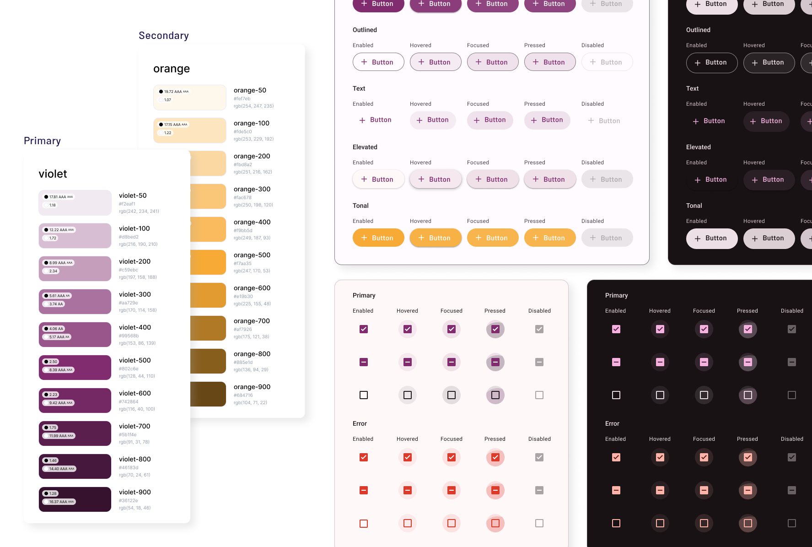
Product Evolution
From Documentation Website to Developer Platform
I evaluated the existing experience through heuristic analysis and benchmarked established developer platforms to identify opportunities across onboarding, discoverability, and developer activation.
Example Code Redesign
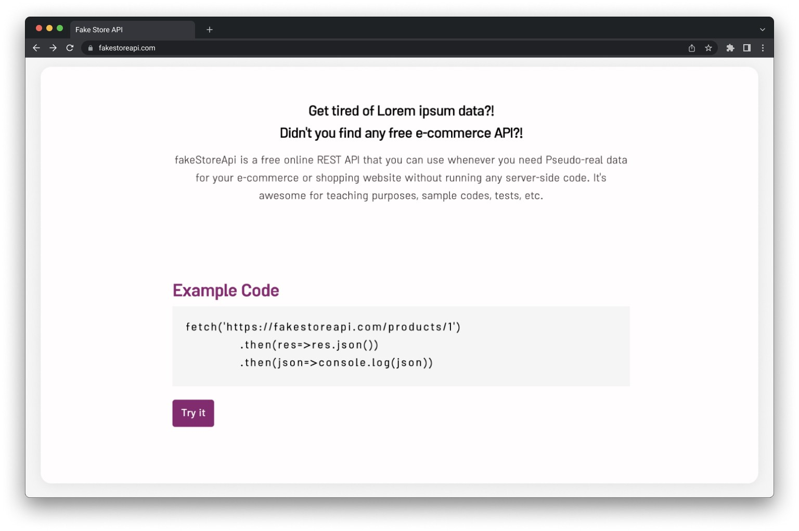
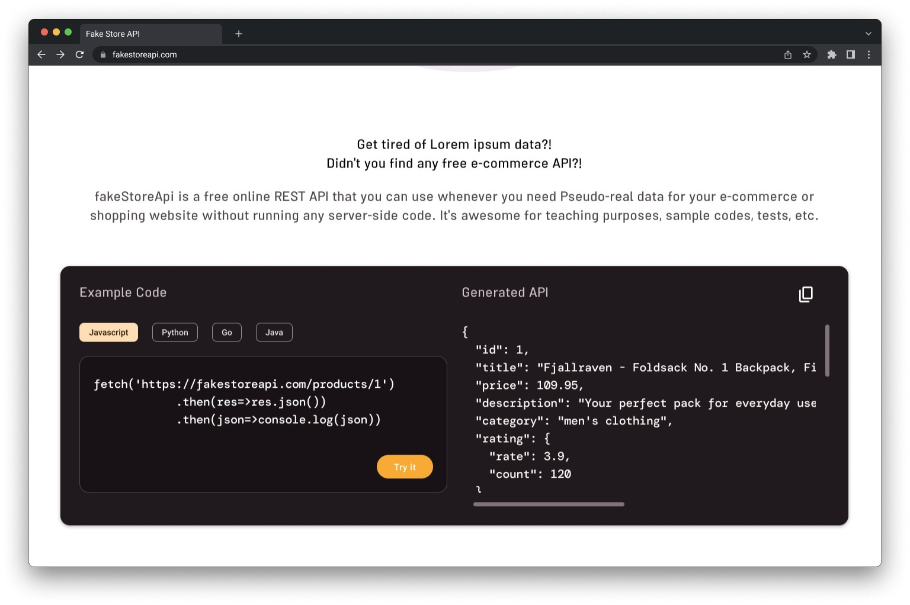
Resources Section
New section added:
- Endpoint discovery
- Documentation shortcuts
- Reduced exploration friction
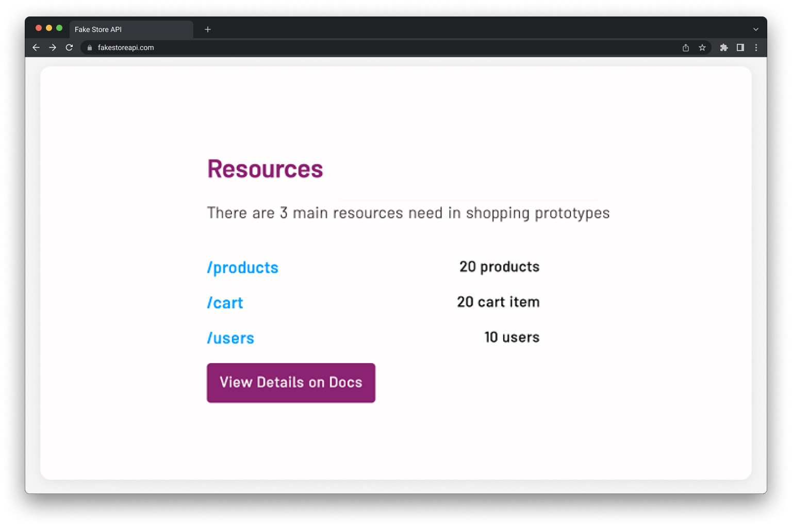
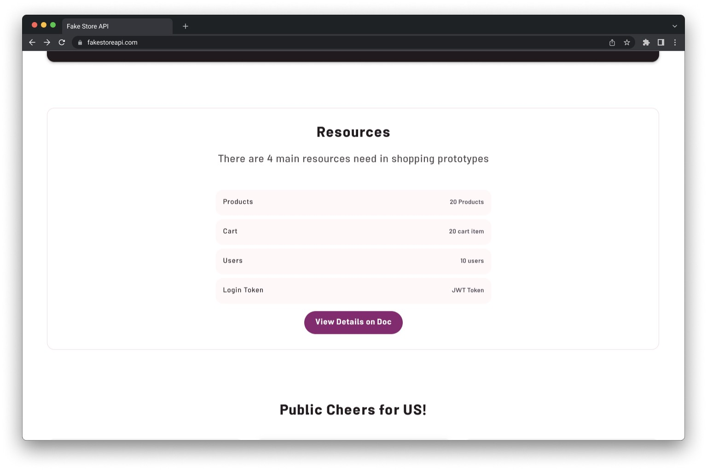
Login and Profile
New section added:
- User login
- Account creation
- Personal dashboard
- Recently used resources
- Saved endpoints
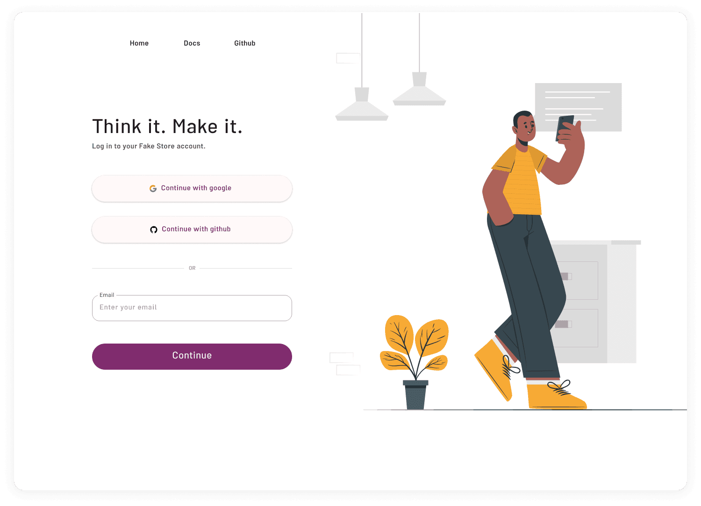
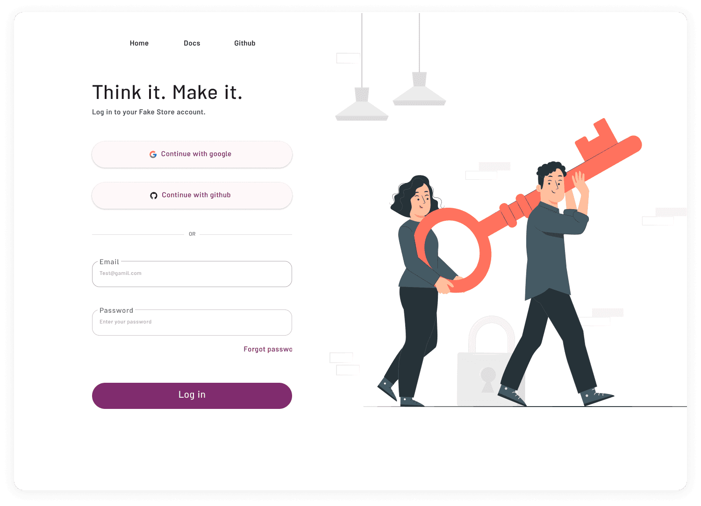
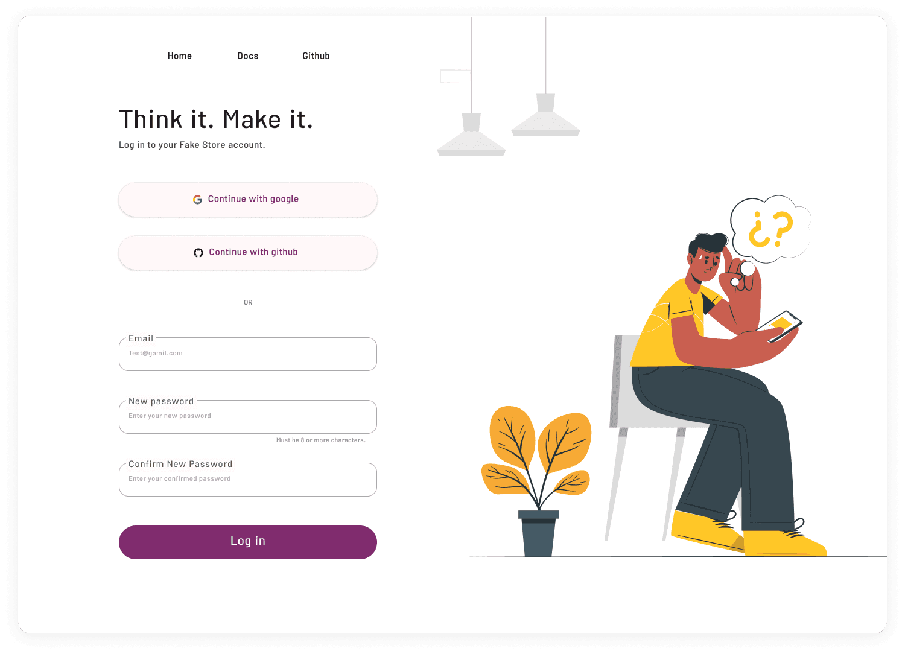
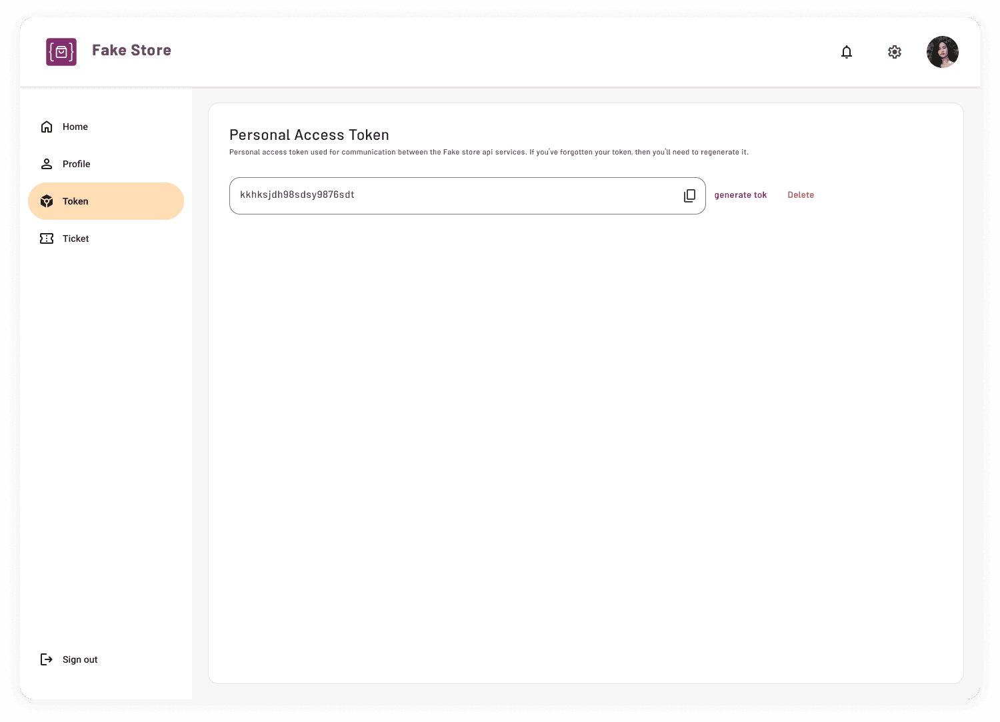
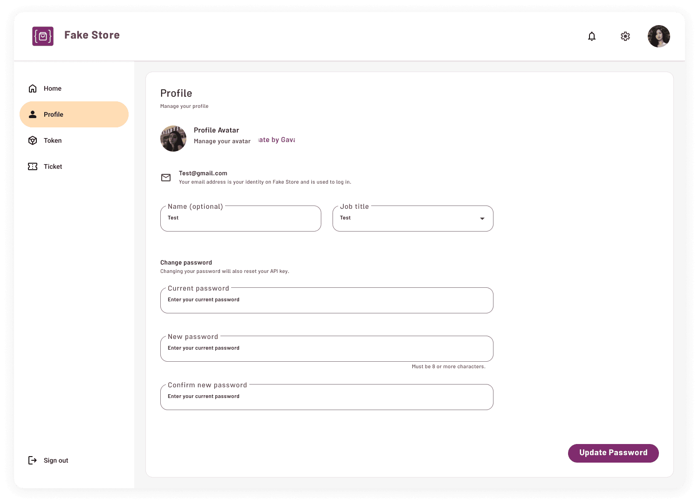
Post-launch Validation
Measuring Real User Behavior
After launching the redesigned experience, I used Microsoft Clarity to analyze real user behavior and validate key design assumptions.
User Behavior Metrics
After redesign, Clarity insights were used to validate user behavior and identify further opportunities.
Documentation was the primary destination for developers.
Many users bypassed marketing content and went directly to technical resources.
The navigation pattern matched developer behavior: Landing → Documentation → Exit
Usability & Performance
Indicates opportunities to improve discoverability of interactive elements.
Low frustration during navigation and interaction.
Where are these clicks happening?
From Clicks to Friction
Investigating Interaction Friction
Clarity revealed two distinct interaction patterns across the redesigned homepage: strong engagement with API examples, and a preference for actionable resource links over descriptive content.
01 — API Examples: High Engagement, but Unclear Interaction
The API example was one of the most interacted-with areas of the page, but repeated clicks on the code itself were frequently registered as dead clicks. Rage clicks were also concentrated around the API request.
1. All Clicks — Where users interacted
The highest concentration of clicks within the example was around the API request and code snippet.
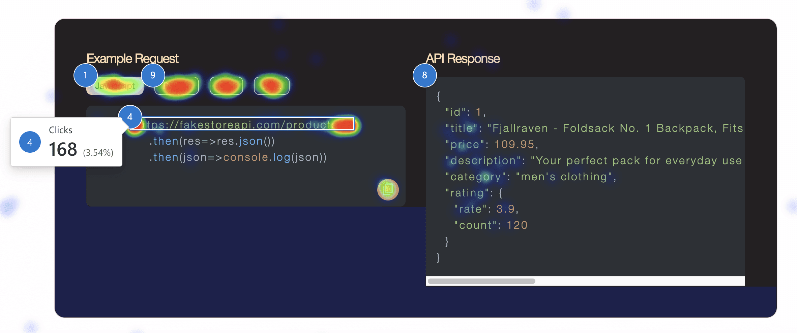
2. Dead Clicks — Where interaction failed
This indicated that users were attempting to interact with the code itself rather than using the less prominent copy action.
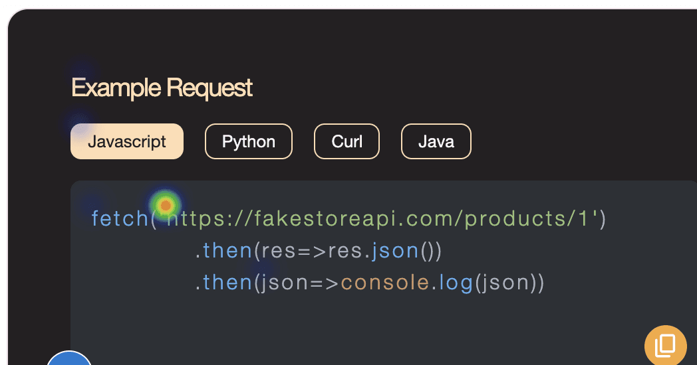
3. Rage Clicks — Where friction escalated
Although the overall rage-click rate was low (1.17%), the heatmap revealed a concentrated cluster around the API request. Combined with the overlap between high click activity, dead clicks, and rage clicks, this highlighted the code example as a key area of interaction friction.
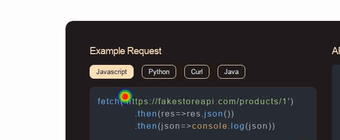
4. Session Recording — What actually happened
Users appeared to perceive the code snippet itself as interactive, while the icon-based copy action was not sufficiently discoverable.
Make the copy interaction more explicit and reduce ambiguity around how the code example can be interacted with.
02 — Resources: Users Prefer Actions Over Explanations
Resource names and actions received significantly more interaction than their supporting descriptions, suggesting that users were primarily scanning for actionable destinations rather than reading explanatory content.
All Clicks
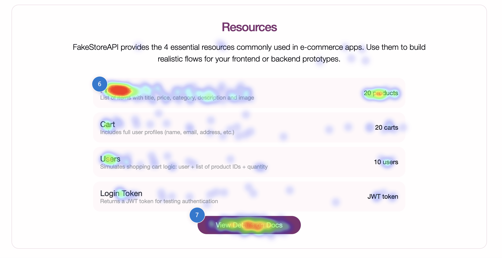
Developers appeared to scan the Resources section for direct paths to products, users, and documentation rather than engaging with descriptive copy.
Prioritize actionable resource links and reduce the visual weight of supporting descriptions.
From Exposure to Engagement
Where Attention Starts to Fade
Users reached an average of 55.84% of the homepage. The scroll heatmap shows that key functional content — including API examples and Resources — remained within the higher-exposure area, while attention gradually declined toward social proof and footer content.
Users were more likely to reach practical developer content, while lower-priority marketing and supporting content received less exposure further down the page.
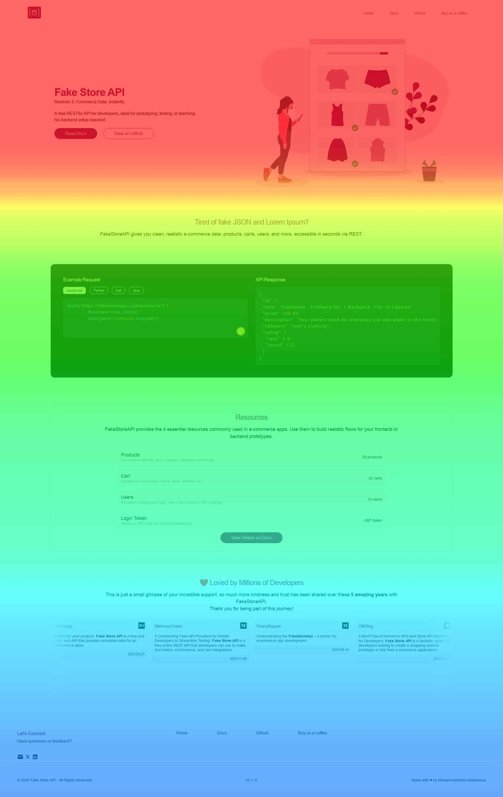